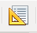
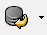
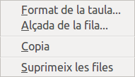
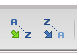
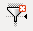
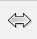

Taules
Les taules d’una base de dades en conformen l’estructura principal, podríem dir que es tracta dels fonaments bàsics de l’estructura. Cada taula conté la informació que utilitzaran la resta d’objectes de la base de dades: consultes, formularis, informes…
El disseny de les taules ha de ser un procés meditat en el qual heu de tenir en compte les necessitats i la finalitat a les quals estarà destinada la vostra base de dades.
Creació de taules
Hi ha dues formes de crear taules en base, utilitzant l’Auxiliar o bé emprant l’eina de Disseny de taula. L’assistent ofereix algunes facilitats però també certes limitacions. És per això que en primer lloc ens decantarem per l’opció de disseny de taules.
A la finestra Disseny de taula que podem observar a la figura hi teniu la típica barra de menús de LibreOffice.org i a sota una barra d’eines reduïda. Les funcions s’activaran quan comenceu a introduir informació.
Camps de la taula
Com ja sabeu, l’estructura interna de la taula està formada per camps com podeu veure a la figura. Aquests camps determinen el caràcter de la informació que emmagatzemen i s’identifiquen mitjançant un nom de camp. Per exemple, en una taula en la qual s’emmagatzemin les dades dels proveïdors, un camp imprescindible seria el nom del proveïdor, un altre el tipus d’article que subministra. També podríem incloure la persona encarregada dels contactes, la forma de cobrament, descomptes que realitza… i així fins a completar tota la informació que desitgeu emmagatzemar sobre el proveïdor.
En principi pot ser vàlida qualsevol denominació a l’hora de crear un camp d’una taula. No obstant això, és convenient complir algunes normes:
- El nom del camp ha de descriure, en la mesura del possible, la informació que emmagatzema: nom, data, grup, etc.
- Intenteu que no sigui tan curt que no permeti endevinar el seu contingut, ni tan llarg que resulti incòmode treballar-hi.
- És aconsellable no utilitzar símbols o caràcters especials (guions, espais en blanc…) que puguin generar problemes amb certes operacions o en traslladar la base de dades a altres sistemes.
- Trieu amb cura el tipus de dades per optimitzar al màxim la base de dades. Cal resumir molt el tipus que indica si emmagatzemarem text al camp, nombres o ambdós.
- No dubteu en utilitzar la columna Descripció per indicar el propòsit de cada un dels camps.
- El nom dels camps no pot començar per espais ni contenir signes de puntuació ni claudàtors.
- No poden existir dos camps amb el mateix nom a la mateixa taula.
Tipus de dades
El tipus de dades determina el caràcter de la informació que conté el camp. No és el mateix emmagatzemar valors numèrics amb els quals posteriorment podreu realitzar operacions matemàtiques, que guardar textos com ara els noms dels articles.
Després d’introduir el nom del camp, cal desplegar el quadre de llista associat a la columna Tipus de camp. Apareixerà una llarga llista de possibilitats que es mostren a la figura.
El tipus de camp limita el contingut que emmagatzemarà i delimita l’espai de memòria que ocuparà el valor introduït.
Quan es planifica el disseny d’una taula s’ha de pensar bé el tipus de camp que es vol definir, tenint present el tipus d’informació que s’hi desarà.
Aquí teniu una llista de la principal tipologia de camps amb les seves característiques més importants:
- Enter [INTEGER], nombre enter qualsevol amb capacitat d’emmagatzemar 10 dígits.
- Enter minúscul [TINYINT], nombre enter molt petit. Només accepta 3 dígits.
- Enter petit [SMALLINT], nombre enter amb valors que no sobrepassin els 5 dígits.
- Número fraccionari o decimal [FLOAT], nombre decimal capaç d’emmagatzemar valors que no sobrepassin els 17 dígits entre dígits enters i dígits decimals.
- Número real o decimal [REAL], nombre decimal capaç d’emmagatzemar valors que sobrepassin els 17 dígits.
- Text [VARCHAR], tipus de camp destinat a cadenes de caràcters la longitud dels quals no és fixa. La propietat Longitud determina la seva longitud màxima. Aquest tipus de camp permet escriure qualsevol caràcter que sigui alfabètic (lletres) o numèric, això sí, no permet fer operacions numèriques ja que tracta els nombres com si fossin lletres.
- Text [VARCHAR_IGNORECASE], aquest és un tipus de camp semblant a l’anterior, però es diferencia perquè no s’hi distingeixen majúscules ni minúscules a l’hora de fer una cerca.
- Text (fix) [CHAR], tipus de camp destinat a cadenes de caràcter de longitud fixa. Permet que tots els valors d’aquest camp dels diferents registres siguin iguals en grandària. Normalment s’utilitza per a textos de mida fixa o poc variable, com per exemple el codi postal, el telèfon, el tractament personal, textos predefinits…
- Memo [LONGVARCHAR], de tipus caràcter destinat a emmagatzemar textos de gran longitud com ara comentaris, etc.
- Data [DATE], aquest tipus de dades s’utilitza per emmagatzemar dates. El format de presentació es pot seleccionar a la propietat Format (per exemple dd/mm/aa).
- Hora [TIME], aquest tipus de dades s’utilitza per emmagatzemar informació referida a hores. El format de presentació es pot seleccionar a la propietat Format (per exemple hh:mm:ss).
- Data i hora [TIMESTAMP], combinació de data i hora.
- Si/No [BOOLEAN], aquest tipus de dades, conegut com a booleà, s’utilitza per emmagatzemar només 2 valors: Si/No, 0/1, true/false.
- Imatge [LONGVARBINAR], permet emmagatzemar fotos, imatges, gràfics.
La longitud màxima del tipus Text és de 255 caràcters. Si penseu que el camp superarà aquest límit cal utilitzar el tipus Memo [LONGVARCHAR].
Existeixen altres tipus de camps, com per exemple el tipus [BIGINT], per escriure valors enters molt grans o [BINARY], per emmagatzemar dades binàries de mida fixa, però no s’utilitzen tan freqüentment.
Propietats dels tipus de dades
Cada vegada que trieu un tipus de dada, la part inferior de la finestra de disseny mostra una tot un seguit d’opcions que permeten ajustar el comportament del camp a les necessitats de cada situació. A la figura podeu veure les propietats del tipus Text. En aquest cas, cal destacar la segona de les opcions anomenada Longitud, amb la qual podreu establir la mida màxima de la cadena de caràcters que contindrà el camp.
Hi ha propietats compartides per més d’un tipus de dada i n’hi ha d’altres d’específiques, només disponibles en alguns tipus de dades. Les més importants són:
- Valor automàtic: en activar aquesta opció serà LibreOffice Base l’encarregat d’afegir nous valors al camp. Els valors són seqüencials i diferents de manera que aquesta propietat és especialment útil per associar-la a camps clau de la base de dades. Només apareix en els camps de tipus Integer.
- Expressió increment automàtic: aquesta propietat apareix automàticament després de definir l’opció anterior com a Sí. La seva funció és la d’establir el valor d’increment del camp, d’un en un, de dos en dos, etc. En general, l’expressió per defecte serà la que utilitzem.
- Longitud: especifica el nombre de caràcters per als camps de tipus text o la longitud màxima en els tipus numèrics. Les posicions decimals també compten i es restaran de la mida total.
- Xifres decimals: Determina el nombre de valors decimals que volem emmagatzemar al camp.
Truc En situar el cursor sobre qualsevol propietat, Base en mostrarà al marge dret una descripció detallada.
- Exemple de format: feu clic al botó petit que apareix a la dreta d’aquest camp per mostrar el quadre de diàleg que podeu veure a la figura. Hi podrem definir amb precisió el model de representació per a les dades al camp. Les possibilitats d’aquest quadre de diàleg són realment interessants.
- Valor per defecte: aquí podeu escriure el valor per defecte que prendrà el camp després d’afegir un nou registre. Si per exemple en una taula de clients preveieu que la majoria de registres són de Barcelona, podeu posar aquesta propietat amb la qual cosa us estalviareu d’introduir aquesta informació de forma repetida.
- Entrada requerida: si es tria l’opció Sí per a aquesta propietat s’està obligant l’usuari a introduir una dada en aquest camp. Si no ho feu el registre no es podrà guardar a la taula.
Les propietats dels camps varien en funció de si el tipus de camp és text, numèric, data, etc.
Camps clau
En qualsevol base de dades, els registres inclosos en les diferents taules han d’estar perfectament identificats i d’això se n’encarreguen les claus. Traslladant aquest concepte a la vida real, cada ciutadà té un nombre de DNI. Pot haver-hi dues persones amb el mateix nom i fins i tot cognoms iguals, però totes dues es diferenciaran pel seu número de DNI, que és únic.
Cada taula ha de contenir almenys un camp que permeti identificar unívocament cada registre.
Aquest camp pot ser real, com el mateix DNI d’una persona. O pot ser un valor que ens inventem per aconseguir la mateixa finalitat, com un nombre que s’assigna automàticament a cada registre, assegurant-vos (realment ho farà Base) que no es repeteixi. Una altra opció és utilitzar una combinació de camps per identificar els registres de la taula. Per exemple podríem definir la combinació de nom i cognoms de la nostra taula per aquesta finalitat. No obstant això, existeix la probabilitat que hi hagi clients amb el mateix nom i cognoms, cosa que fa que no sigui una clau del tot vàlida.
És important que abans de tancar la taula definiu un camp clau ja que en cas contrari no es pot editar el contingut de la taula per afegir registres.
Si necessiteu utilitzar més d’un camp per compondre la clau d’una taula, n’hi haurà prou amb seleccionar en primer lloc els camps que voleu utilitzar per després fer clic amb el botó dret i triar l’ordre Clau primària. La forma de seleccionar més d’un camp és mantenir premuda la tecla CTRL mentre feu clic a l’espai situat a l’esquerra del camp.
Creació d'un índex
Un índex és una taula oculta que genera Base en la qual estableix el valor del camp que està sent indexat i la posició que ocupa a la taula. D’aquesta manera quan ordeneu per un camp indexat, s’executa aquesta operació de forma molt ràpida. A més si establiu que l’índex és únic (sense duplicats) Base evitarà que introduïu valors repetits en aquest camp. Per exemple, en una taula de clients, si afegiu el camp NIF per a aquest camp podreu definir-lo com un índex únic, i d’aquesta manera no podreu duplicar a un client el NIF ja existent a la vostra taula.
Per tant, la creació d’índexs en una base de dades com Base és fonamental per agilitar les operacions de recerca i filtrat de dades a la taula i per evitar errors en la introducció de dades, tot evitant els registres duplicats.
Per crear un índex que impedeixi introduir dos clients amb idèntic NIF, accediu al quadre de disseny d’índexs fent clic al botó Índex o bé, a través del menú Eines/Disseny d’índex. Òbviament, heu d’estar dins del disseny de la taula a la qual vulgueu afegir índexs (figura).
- 
- Botó Índex
Apareix el quadre de diàleg de Disseny d’índexs (figura).
Al tauler esquerre hi apareixen els índexs creats i en el panell dret hi apareixen els camps que componen cada índex dissenyat i la possibilitat de triar si serà un índex únic (sense possibilitat de dades duplicades) o un índex amb duplicats. Observeu com en haver definit com a clau principal el camp Id_Client, Base genera automàticament un índex únic per a aquest camp. De tal manera, que no pot haver-hi dos clients amb una mateixa dada en el camp Id_Client.
En definir claus principals en una taula, es genera un índex únic (sense permetre duplicats) per al camp clau primària (figura).
- Botó Quadre de disseny d'índexs
Per crear un índex únic que impedeixi introduir dos NIF idèntics per a dos clients, feu clic al botó del quadre de disseny d’índexs.
Importació de taules
LibreOffice Base ens permet importar dades procedents d’altres aplicacions senzillament copiant i enganxant.
El procediment consisteix a copiar les dades del fitxer d’origen i enganxar-les a la finestra principal d’una base de dades, tal com es detalla a continuació:
- En primer lloc cal obrir el fitxer d’origen i copiar les dades, tal com mostra la figura figura.
- A continuació, cal situar-se a la finestra principal del fitxer de base de dades on volem fer la importació, fer clic amb el botó dret i escollir l’opció Enganxa, tal com mostra la figura figura.
- S’obrirà un assistent per a la importació de les dades, tal com mostra la figura figura.

- La primera pantalla de l’assistent us permetrà escollir si voleu copiar l’estructura de la taula i les dades, només l’estructura, és a dir, els diferents camps però no els registres, o bé només voleu afegir dades. En aquest últim cas, cal que ja tingueu una taula creada amb la mateixa estructura que la que tenen les dades que voleu copiar.
- A la mateixa pantalla també podreu escollir si voleu definir una clau primària. La podeu definir ara o més endavant. Podeu veure les opcions disponibles en aquesta primera pantalla a la figura figura.
- Al pas següent haureu de triar quins són els camps que voleu afegir, poden ser tots o només alguns. Tal com mostra la figura figura, els botons del centre us ajudaran.
- A continuació podreu assignar les propietats a cadascun dels camps, tal com mostra la figura figura.
- Un cop assignades les propietats, premeu el botó Crea. L’assistent us indicarà que cal que assigneu una clau primària, tal com mostra la figura figura. Podeu deixar que el mateix programa l’assigni i, si no és la que voleu, més endavant podeu editar la taula i canviar-la.
- Un cop cliqueu el botó Sí, es genererà la taula i la podreu editar o obrir, tal com mostra la figura figura.
Edició de dades en taules
Un cop creada la taula, afegits els camps necessaris i assignada la clau primària per reconèixer inequívocament cada registre, el següent pas serà introduir en la taula tota la informació que desitgeu emmagatzemar.
Afegir dades a una taula
Una vegada definida i creada l’estructura de la taula, ho teniu tot disposat per començar a introduir dades. Si bé és cert que els formularis són l’eina específica per afegir informació en una base de dades, podeu prescindir-ne a l’hora de realitzar petites operacions d’edició. En aquests casos podeu treballar directament sobre les taules de la vostra base de dades, afegint nous registres, modificant valors o eliminant qualsevol dada.
Barra edició registres
Analitzem els diferens botons de la barra d’edició de dades (figura).
- Permet guardar el registre actual.
- Permet editar les dades.
- Permet retallar un registre.
- Permet copiar un registre.
- Permet enganxar un registre.
- Permet desfer una entrada de dades.
- Permet cercar un registre.
- Permet refescar la taula.
- Permeten ordenar els registres en ordre ascendent o descendent o amb paràmetres.
- Comandaments que permeten filtrar informació.
Amb aquests passos podeu anar afegint dades a la taula, però no oblideu que en acabar d’introduir tots els camps d’un registre i passar al següent, l’anterior quedarà guardat automàticament a la taula.
El botó Desa també permet fer aquesta mateixa acció de forma manual.
-

- Botó Desa
És important saber que la comanda Desfer no permet anul·lar la inserció d’un registre complet.
En introduir les dades heu de tenir la precaució d’omplir els camps d’acord amb la definició que hem fet de la taula. Base no detecta tots els errors i, en aquest cas, és possible que transformi les dades a un valor per defecte equivocat. De la mateixa manera, si intenteu emmagatzemar un registre sense omplir un camp que hem definit com d’entrada requerida, Base ens ho impedirà amb la corresponent finestra d’avís i amb un missatge incomprensible, tal com mostra la figura. En principi només ens ha de preocupar la primera part del missatge: Error en inserir un nou registre de dades.

Característiques interessants del mode Edició
A la finestra d’edició trobeu una sèrie d’eines que us poden ajudar a l’hora de treballar amb la informació de la taula:
- Botó Edició
- El botó Edició serveix per alternar entre el mode Edició i Només lectura. En el primer cas podem afegir, modificar i eliminar dades de la taula. Es reconeix perquè l’última fila de la taula apareix amb una icona de flaix a la columna de l’esquerra. En el segon mode només podem llegir la informació de la taula.
- 
- Botó Refresca
- El botó Refresca permet actualitzar les dades de la taula o reconstruir-les si s’haguessin realitzat modificacions en l’estructura.
Observeu a la figura com la part inferior de la finestra mostra uns botons que permeten desplaçar-vos a través dels registres de la taula, en cas que aquesta fos molt extensa i no cabés a la finestra. A l’esquerra apareix el número del registre actiu amb el número de registres a la taula.
Recordeu que les combinacions de tecles Control + C (copiar), Control + X (tallar) i Control + V (enganxar) són el mètode més ràpid per utilitzar aquestes comandes. En qualsevol cas, també els podeu trobar a Edita.
A la part inferior de la taula, la barra de la figura indica el nombre de registres que conté la taula i el registre on esteu situats.
LibreOffice Base no permet copiar registres sencers. Però no tindreu cap problema per utilitzar els comandaments Tallar, Enganxar i Copiar amb el contingut de qualsevol camp de la taula.
Eliminar registres
Abans d’aprendre a eliminar un o més registres heu de conèixer la forma de seleccionar-los. Per això, feu clic en l’espai de color situat a l’esquerra de cada registre i que hem ressaltat en la figura.
Hi ha la possibilitat d’eliminar diversos registres a la vegada. Per això feu clic al marge esquerre del primer, mantingueu premuda la tecla Maj i, a continuació, seleccioneu l’últim dels registres que voleu esborrar. Després, tots els registres situats entre els dos marcats quedaran seleccionats. Si utilitzeu la tecla Control, podreu seleccionar registres no consecutius tal com mostra la figura.
Finalment, per eliminar un o diversos registres prèviament seleccionats, fem clic amb el botó dret en l’espai gris situat a la seva esquerra. Apareixerà un menú emergent en el qual seleccionarem l’opció Elimina files tal com podeu veure a la figura.
- 
- Eliminar registres: menú contextual
Un cop eliminat el registre no existeix cap ordre que permeti desfer l’operació, de manera que heu d’estar completament segurs abans d’executar-la.
Duplicar registres
LibreOffice Base ofereix un mètode senzill per duplicar un o diversos registres. Aquest mètode pot estalviar feina a l’hora d’introduir informació similar a la taula:
-

- Al costat del cursor apareixerà aquest símbol.
- Seleccioneu el registre o els registres que voleu duplicar.
- A continuació feu clic, mantingueu premut el botó esquerre del ratolí i arrossegueu, fins que al costat del cursor aparegui un petit símbol més. En aquest moment, podeu deixar anar el botoó del ratolí, i els registres seleccionats apareixeran duplicats al final de la taula.
Si en duplicar registres el camp clau està configurat com a automàtic no hi haurà cap problema ja que serà el mateix programa el que s’encarregarà d’assignar el valor adequat. Si no és així, Base mostrarà un missatge d’error i situarà el cursor sobre el camp clau perquè introduïu la dada correcta. Després d’això, podreu validar el registre sense cap problema.
Cercar informació en una taula
Quan treballeu amb bases de dades, la recerca d’informació sol dur-se a terme mitjançant consultes. No obstant això, quan només voleu localitzar un nombre reduït de dades o no aplicareu criteris molt complexos, podeu fer la cerca des de l’eina de recerca en taules. Amb aquesta eina podreu localitzar qualsevol registre a partir del contingut de qualsevol dels seus camps.
Feu clic sobre el botó Cercar registres de dades per mostrar el quadre de diàleg que apareix a la figura. Aquest quadre de diàleg està dividit en tres seccions, de les quals ens n’interessen dues:
- L’opció Text situada a la secció Cerca per, serà on haureu d’introduir la paraula o terme que desitgeu buscar a la taula. Podeu especificar una cadena de caràcters o un nombre, o bé podeu fer que l’eina de recerca localitzi aquells camps amb un camp buit (NULL) o amb un camp no buit.
- A la segona secció, Àrea, especificareu si voleu que Base busqui per tots els camps de la taula o bé es limiti a buscar en un camp específic.
- A Paràmetres, podeu establir les condicions de la cerca.
Una opció interessant de la cerca, és la possibilitat d’utilitzar comodins en camps de text.
El caràcter comodí ? equival a un caràcter i el caràcter comodí * equival a un conjunt de caràcters. Per exemple l’expressió c?la cercaria registres amb els valors cola i cala i l’expressió s* retornaria els registres amb qualsevol valor que comencés per s.
Ordenació bàsica de dades
Per defecte, cada vegada que obriu una taula es mostraran els registres en l’ordre en què s’han introduït. No obstant això, podeu fer que els registres s’ordenin de forma ascendent o descendent en funció de qualsevol dels camps que conformen la taula.
- Feu clic sobre el nom del camp pel qual voleu que s’ordenin els registres. Després de marcar, apareixerà seleccionada la columna corresponent tal com es mostra a la figura.
- Ordre ascendent
- A continuació feu clic sobre el botó d’ordenació automàtica en ordre ascendent o al botó d’ordenació automàtica en ordre descendent segons sigui necessari.
- 
- Ordre descendent
- Automàticament apareixerà la taula amb els registres ordenats.
Podeu establir fins a tres condicions per ordenar els registres d’una taula com podeu veure a la figura
Autofiltre
En determinades ocasions pot interessar-vos mostrar només certs registres de la taula però sense utilitzar una consulta gaire complicada.
La forma més senzilla de fer-ho és utilitzar l’eina Autofiltre que permet mostrar a la finestra de dades només aquells registres en els quals el valor del camp coincideix amb el valor seleccionat.
Per tal de filtrar per dues condicions, heu de fer el primer filtratge i un cop obtingueu el resultat tornar a aplicar el segon filtratge sobre el resultat mostrat.
- 
- Per tal de recuperar l'aspecte original de la taula i mostrar-ne de nou tots els registres, feu clic a la icona Elimina filtre.
Modificar l'aparença d'una taula
LibreOffice Base permet tot de petites modificacions sobre l’aspecte de les taules. Per exemple:
- Per modificar l’amplada d’una columna feu clic amb el botó dret sobre la seva capçalera i seleccioneu l’opció Ample de columna. Si trieu Automàtic serà Base qui li assigni l’amplada de manera que es puguin llegir totes les dades d’aquesta.
- Una altra manera de modificar l’amplada d’una columna és utilitzar el ratolí. Situeu-vos amb el punter del ratolí en un dels límits laterals de la primera cel·la de la columna que vulgueu modificar. El punter es transforma en una doble fletxa. En aquest moment feu clic amb el ratolí i arrossegueu cap a l’esquerra o la dreta el límit de la columna.
- Per modificar l’alçada de les files, els mètodes disponibles són els mateixos que hem descrit per les columnes llevat que, en aquest cas, les modificacions afecten a totes les files de la mateixa manera.
- Si voleu canviar la font de text utilitzada per mostrar les dades de la taula, feu clic amb el botó dret sobre l’espai situat a l’esquerra de cada fila i a continuació seleccioneu la comanda Formatat de taules. LibreOffice Base mostrarà el quadre de diàleg que podeu veure a la figura, en el qual podreu triar la font de text, la seva grandària, l’estil, així com altres efectes de font.
- Feu clic amb el botó dret sobre la capçalera de qualsevol columna i seleccioneu la comanda Formatat de columnes. Entre les possibilitats que ofereix el quadre de diàleg podreu modificar l’alineació de les dades i aplicar-hi diferents formats.
- Per acabar, cal tenir en compte LibreOffice Base permet ocultar una o més columnes de la taula temporalment. Per fer-ho seleccioneu la columna que voleu amagar i feu-hi clic amb el botó dret per seleccionar l’opció Amaga columna. Per tornar a fer-la visible haureu de fer clic amb el botó dret sobre qualsevol cel·la de la primera fila, seleccionar l’opció Mostra columnes i finalment fer clic sobre la columna que vulgueu que torni a ser visible o bé sobre l’opció Totes. Observeu la figura.
- 
- Punter en forma de doble fletxa.
Totes aquestes modificacions es perdran si no es guarden els canvis en sortir de LibreOffice Base, no de la vista full de dades de la taula.
L'assistent per a taules
L’assistent per a taules de Base inclou un gran nombre de taules predissenyades que podeu configurar i utilitzar en tan sols uns minuts. La utilització d’aquesta possibilitat que ofereix Base té algunes limitacions.
Utilitzeu aquesta opció de Base per comprovar tot el seu potencial.
Relacions entre taules
LibreOffice Base és un gestor de base de dades relacional perquè, entre altres coses, permet establir vincles o relacions entre les taules que el componen.
L’objectiu d’aquestes relacions és principalment evitar la duplicitat d’informació i, en conseqüència, optimitzar el rendiment de la base de dades.
Concepte de relació
Vegem un senzill exemple de relació entre les taules Clientsi Detall Comandes.
L’estructura d’aquestes taules provoca una important redundància de dades que repercuteix directament sobre l’eficàcia del sistema.
La forma de solucionar aquest problema és senzilla: relacionar les taules i substituir tota la informació de clients de la taula Comandes per la clau del client. D’aquesta manera, quan sigui necessari utilitzareu el camp clau del client per accedir a la taula Clients i obtenir-ne les dades necessàries.
En tota relació hi intervenen dues taules. La primera és la que conté la informació completa i la denominarem taula principal, la segona la denominarem taula secundària i és la que enllaça des dades de la taula principal amb la taula secundària.
Tipus de relacions
La redundància d’informació no és gens recomanable quan es treballa amb bases de dades que contenen una gran quantitat d’informació.
La solució passa per relacionar les taules amb informació coincident de manera que no hi hagi duplicitat d’informació. Tot això, dit d’una altra manera, seria: per què escriure dues vegades el mateix si puc fer-ho una sola vegada i treballar de la mateixa manera?.
Tornant al nostre exemple, si relacionem les taules Clients i Productes mitjançant el Codi del client n’hi hauria prou amb indicar a la taula Clients aquest valor per tal d’obtenir el nombre de productes que ha comprat un determinat client.
No sempre les condicions per establir vincles entre dues taules són iguals. La manera com es relacionen les taules entre si dóna lloc a comportaments diferents. En l’estructutura de qualsevol base de dades trobem principalment tres tipus de relacions que es descriuen de la següent manera:
- Un a molts
- Molts a molts
- Un a un
Dels tres tipus, el més utilitzat i recomanable en la majoria dels casos serà el model Un a molts.
Un a molts
Vegem el primer model de relació prenent com a referència les taules Categories i Productes. Qualsevol article (molts) pertany només a un grup (un). Un article no pot ser en més d’una categoria. Doncs bé, ni més ni menys que aquest seria l’argument d’una relació un a molts.
Un altre exemple. Sabem que cada client pot fer diverses comandes, però que cada comanda l’ha feta un client. D’aquí podem extreure’n una relació un a molts entre les taules Clients i Comandes.
En les relacions d’un a molts cada registre d’una taula A, a la qual anomenarem taula primària, pot estar enllaçat amb més d’un registre d’una altra taula B, a la qual anomenarem taula secundària. En canvi, cada registre de la taula B només pot estar enllaçat a un registre de la taula A.
Un a molts o molts a un únicament es diferencia en el sentit de la relació, és a dir, si la taula primària es troba a l’esquerra o dreta de la relació. En realitat es tracta del mateix tipus de relació i és la més convenient d’utilitzar.
Un a un
Les relacions un a un no són massa freqüents però n’hi ha, així que les heu de conèixer. Buscant alguna coincidència en el nostre entorn que ens pugui servir com a exemple trobem el vincle entre una comanda i la seva factura. Tal com sabeu, cada comanda genera una factura (un) i de la mateixa manera, cada factura o tiquet de venda només pot tenir una comanda. Aquesta seria una relació un a un.
Molts a molts
Si voleu conèixer els articles que han comprat els clients o els clients que han comprat determinats articles, en principi necessiteu dues taules: Clients i Productes. I quina seria la relació entre aquestes dues taules? Doncs bé, per establir-la podríeu llegir que un client compra diversos articles, i un article pot ser comprat per diversos clients. Per tant, us trobareu entre una relació molts a molts.
Des d’un punt de vista teòric diríem que en les relacions molts a molts a cada registre de la taula A se li poden associar diversos registres de la taula B i cada registre de la taula B pot estar relacionat amb més d’un registre de la taula A.
Per establir una relació molts a molts entre dues taules s’utilitza una taula intermèdia que es relaciona d’un a molts amb cadascuna de les dues taules que es volen relacionar.
Establir relacions entre taules
Un requisit indispensable per establir una relació entre dues taules és que ambdues taules tinguin un camp en comú. Observeu la figura.

Els camps que s’utilitzen per establir la relació entre dues taules han de ser del mateix tipus integer, text, small integer, etc.
Habitualment, per a aquest propòsit, se solen utilitzar tipus enters (Integer) però se’n podrien utilitzar de qualsevol altre tipus, sempre que fos el mateix en les dues taules.
A més, heu de tenir en compte el següent:
- La propietat Mida del camp ha de ser igual en ambdues taules.
- Si el camp a la taula primària està definit com de Valor automàtic, a la taula secundària ha d’estar definit com Integer.
- El camp comú ha de ser la clau principal a la taula primària.
Configurar relacions
Un cop establerta la relació podeu modificar les seves característiques. Cal fer doble clic sobre la línia que representa la relació o bé fer-hi clic amb el botó dret i triar Edita. En ambdós casos, Base mostra el quadre de diàleg que apareix a la figura amb la configuració per defecte de la relació.
La relació establerta entre les dues taules implica que qualsevol modificació realitzada sobre la informació que conté la taula primària afectarà les dades de la taula secundària.
Si, per exemple, elimineu la categoria 1 de la taula Categories això afectarà tots els registres de la taula Productes pertanyents a aquest grup. Determinar com reaccionarà la base de dades davant d’aquestes modificacions i d’altres similars és el que permet configurar el quadre de diàleg Relacions.
La part inferior del quadre de diàleg Relacions està dividit en dues parts corresponents a l’acció que durà a terme la base de dades quan actualitzeu i quan elimineu un registre de la taula primària respectivament, com podeu veure a la :figura.
- L’opció Cap acció implica que els canvis a la taula primària no afectaran la taula secundària. Aquesta decisió no és la més adequada, ja que és molt probable que us condueixi a inconsistències a la base de dades.
- L’opció Actualitzar i Eliminar cascada implica que a la taula secundària s’eliminaran o actualitzaran els registres en funció de l’acció que es dugui a terme a la taula primària. Segurament aquesta sigui l’elecció més segura i conservadora de les possibles i és la que haureu d’utilitzar en la majoria dels casos.
- L’opció Posar null provocarà que, automàticament, el camp relacionat a la taula secundària passi a null (buit) quan es modifiqui la taula primària.
- L’opció Per defecte fa que el camp relacionat de la taula secundària sigui substituït pel valor predeterminat definit en la creació de la taula.